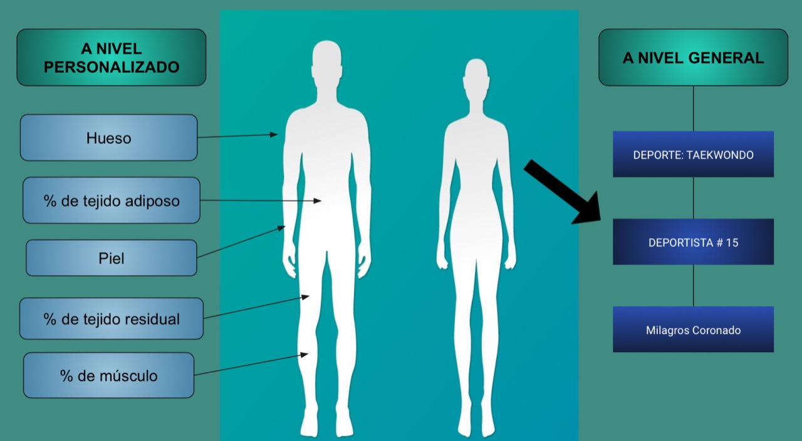

Avances de la semana 3
Seguro
Estético
Multiusuario
Compatible
Requerimientos de diseño
Lista de exigencias siguiendo el parámetro VDI 2225
.jpg)
Conceptos de solución
Concepto de solución 1
Aplicativo móvil conversor de voz a texto capaz de organizar los datos en una hoja de Microsoft Excel conforme se registran
Esta aplicación para teléfono móvil 1) recibe como entrada la voz del usuario nombrando el parámetro y la medida correspondiente a este, 2) convierte la voz a texto y 3) genera una tabla de dos columnas adyacentes: una para el nombre del parámetro y una para la medida.
Este sistema facilita la adquisición manual de medidas por un solo profesional y reduce el tiempo que toma registrar las medidas en la plantilla.
La siguiente imagen describe con más detalle el proceso mediante un ejemplo:

Restricciones de la propuesta 1:
1) Toma de datos:
El sistema que desarrollaremos se enfocará en la toma de datos de manera indirecta, esto es, que la medición a los deportistas será hecha por los profesionales encargados manteniendo las técnicas regulares. Estos datos serán recién ingresados a nuestro sistema.
2) Almacén de la información:
El servidor que guardará la información que sea ingresada, los gráficos u otros derivados de estos no será desarrollado en nuestra solución. Esto es porque debido al corto tiempo y la complejidad que supone el crear una base de datos, organizarla para que este completa y cumpla con los estándares demanda una gran cantidad de recursos.
Concepto de solución 2
Aplicativo móvil generador de un registro de bases de datos
Este aplicativo para teléfono móvil sistema recibe los datos antropométricos previamente tomados por el especialista y en base a ellos crea un registro con la información antropométrica de cada deportista y un historial para el mismo.
Asimismo, organiza la información según parámetros como: deporte, edad, sexo, biotipo y antecedentes médicos. Además, elabora resúmenes de cada medida antropométrica en base a un parámetro a escoger para facilitar la visualización de los datos.
La siguiente imagen describe con más detalle el proceso mediante un ejemplo en donde se organiza la información en tablas y se elabora un gráfico peso vs. tiempo:

Restricciones de la propuesta 2:
1) Toma de datos:
El sistema que desarrollaremos se enfocará en la toma de datos de manera indirecta, esto es, que la medición a los deportistas será hecha por los profesionales encargados manteniendo las técnicas regulares. Estos datos serán recién ingresados a nuestro sistema.
2) Almacén de la información:
El servidor que guardará la información que sea ingresada, los gráficos u otros derivados de estos no será desarrollado en nuestra solución. Esto es porque debido al corto tiempo y la complejidad que supone el crear una base de datos, organizarla para que este completa y cumpla con los estándares demanda una gran cantidad de recursos.
3) Análisis de los datos:
En este punto cabe resaltar que, si bien el sistema facilitará la visualización de la información recolectada, asimismo que la guardará para su fácil acceso posteriormente; dependerá de los profesionales encargados el cómo interpretarla y aplicarla en la creación de guías prácticas. Sin embargo, como objetivo secundario tenemos la opción de realizar un pre análisis de estos datos los cuales puedan servir como precedente en la creación de guías futuras.
Concepto de solución 3
Sistema de recolección y tratamiento de información antropométrica basada en deportes
Este sistema permite a los especialistas el ingreso de los datos antropométricos a un registro que almacena la información. Así como un tratamiento de datos a nivel individual y general, según el deporte, con el objetivo de un mejor control antropométrico a los deportistas calificados.
a. A nivel personalizado, se podrá visualizar la composición corporal en cinco fracciones (masa de piel, tejido adiposo, muscular, ósea y residual/otros) en un modelo de cuerpo humano, donde se mostrará el porcentaje de masa de cada componente y se mostrarán en distintos colores en proporción al porcentaje que tenga el deportista, si este cumple con el objetivo propuesto por el nutricionista, estará de color verde, de lo contrario, estará de color rojo. De tal manera, se podrá monitorear el avance del deportista mediante la variación de estas proporciones visualmente apreciables.
Restricciones de la propuesta 3:
1) Toma de datos:
El sistema que desarrollaremos se enfocará en la toma de datos de manera indirecta, esto es, que la medición a los deportistas será hecha por los profesionales encargados manteniendo las técnicas regulares. Estos datos serán recién ingresados a nuestro sistema.
2) Almacén de la información:
El servidor que guardará la información que sea ingresada, los gráficos u otros derivados de estos no será desarrollado en nuestra solución. Esto es porque debido al corto tiempo y la complejidad que supone el crear una base de datos, organizarla para que este completa y cumpla con los estándares demanda una gran cantidad de recursos.
3) Análisis de los datos:
En este caso, se deberá recolectar una cantidad de datos confiables para que después sea posible el análisis de estos y generar una conclusión confiable.
Selección del mejor concepto

De acuerdo a la tabla de valoración realizada en el punto anterior, se puede observar que tanto la solución dos y tres cumplen los requisitos presentados. Sin embargo, cabe resaltar que después de las visitas al IPD, hemos podido observar que el sistema que propondremos deberá enfocarse en la visualización e interpretación de las medidas antropométricas correspondientes y, asimismo, deberá facilitar la comparación de los resultados en los deportistas para poder crear una guía que los profesionales encargados puedan usar como base para sus diagnósticos. Lo cual nos lleva a tomar los dos siguientes puntos como importantes. Primero, una fácil visualización de los cambios de las medidas antropométricas en los deportistas a través del tiempo. Segundo, la facultad de poder crear guías base estándar, a partir de los datos tomados, que permitan a los profesionales realizar una comparativa para poder tener una mejor noción sobre cuáles son los deportistas que necesitan un control más exigente con respecto a sus compañeros. Por lo cual, la solución que se escogerá es la solución número 2